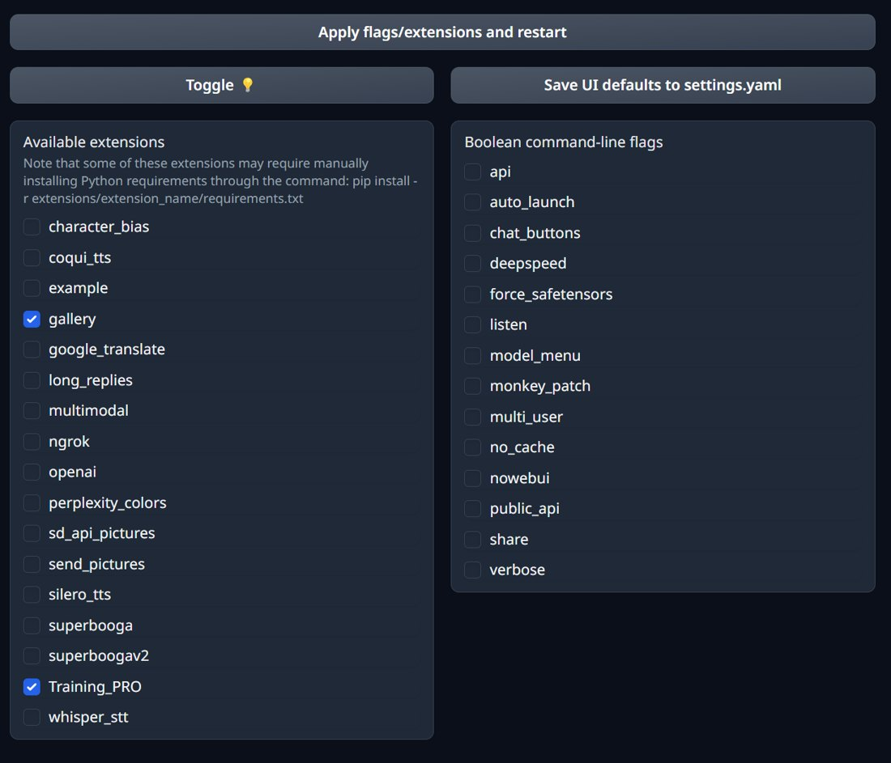
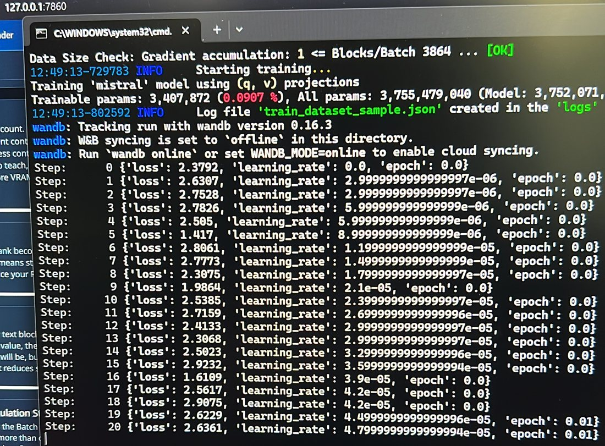
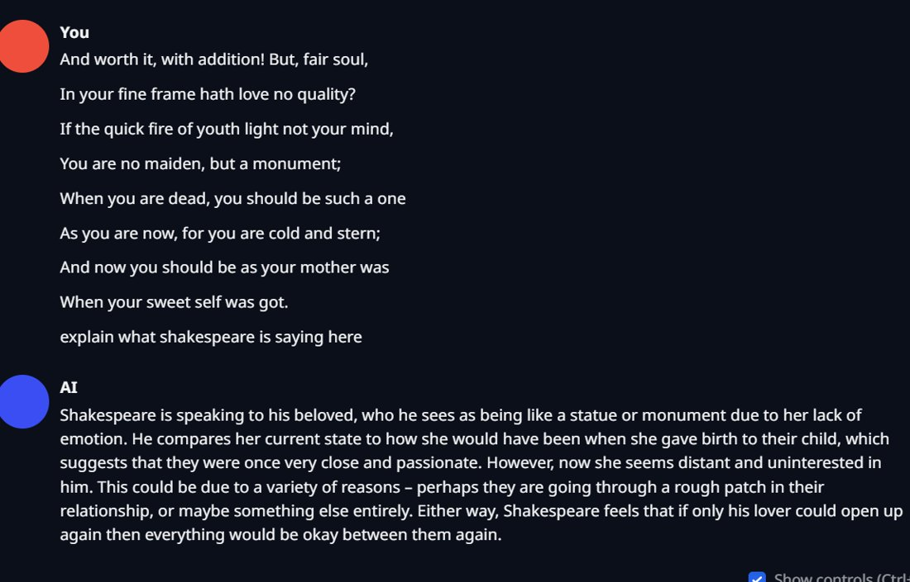
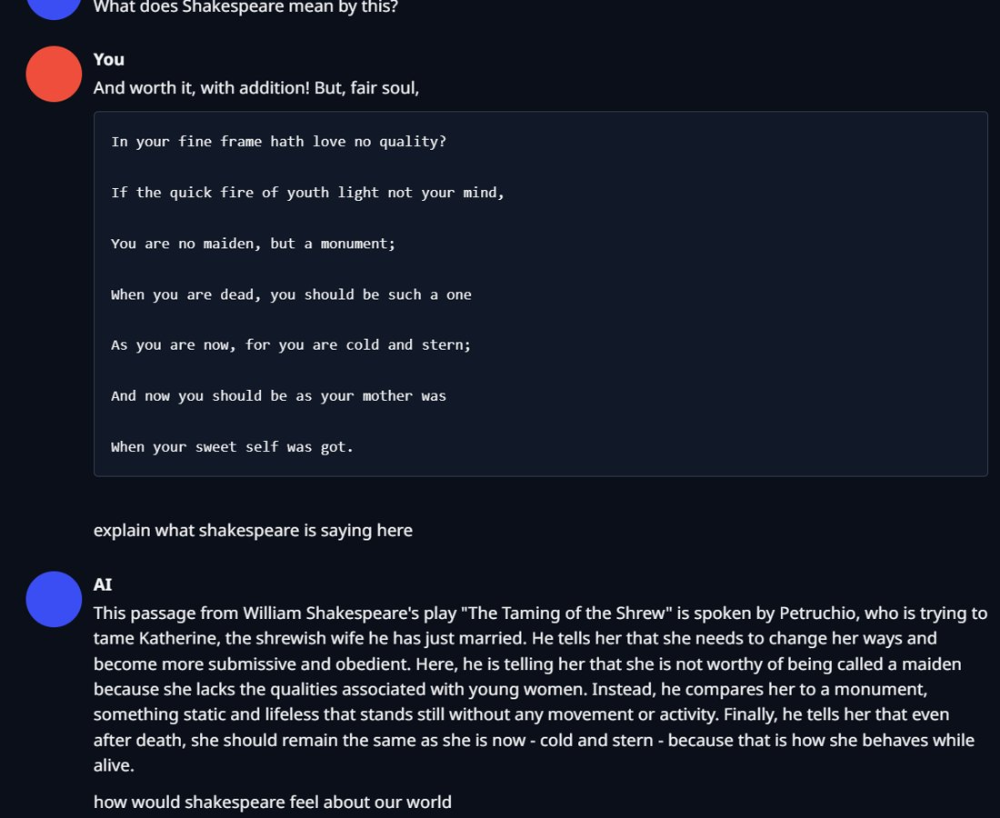

MSc AI thesis · Asia Pacific University · Mar 2024
Mistral 7B, in Shakespeare's voice
For my master's thesis I fine-tuned a 7-billion-parameter language model on Shakespeare, on a laptop. The base model stayed frozen in 4-bit; I trained a LoRA adapter on top. Four attempts in one day, one that worked, and a few things I'd now describe differently.
The setup
Everything here is read from the files the training tool saved, not from memory.
What was trained
- Base model
- Mistral-7B-v0.1, loaded in 4-bit (QLoRA)
- Adapter
- LoRA rank 128, alpha 256, dropout 0.05, on the attention q and v projections
- Data
- Shakespeare as raw text, 375 KB, cut into 320-token blocks
- Optimiser
- AdamW, learning rate 3×10-5, linear decay after 100 warm-up steps
- Batch
- 7 per step × 5 accumulated = 35
- Stop rule
- stop once loss falls below 1.2
- Tooling
- text-generation-webui with the Training PRO extension
- GPU
- RTX 3080 Ti Laptop, 16 GB (about 10.5 GB used)
Why this way
Full fine-tuning of a 7B model needs far more memory than a laptop has. QLoRA gets around that twice: the frozen base model is stored in 4-bit, and only two small matrices per attention layer are trained. The whole result is one adapter file you load on top of the original model.

One day, four runs
11 March 2024. Each run left its own folder of logs and settings behind.
| Run | Rank | Settings | What happened |
|---|---|---|---|
| lorad | 8 | lr 3×10-4, batch 4, 256-token blocks | Stopped. 781 steps in 1.45 h, only 0.2 of an epoch; loss hovered around 2.2. |
| glutenberg | 128 | lr 3×10-5, batch 7×5, 256-token blocks | Stopped after 39 steps (8.6 min). Its 39 steps were carried into the final run. |
| glutenberg1 | 128 | same, 448-token blocks | Stopped after 4 steps; the next run used 320-token blocks instead. |
| glutenberg2 | 128 | same, 320-token blocks | The thesis run. Resumed at step 39, ran to 859 steps over 7.02 epochs in 3.78 h; loss 1.15. Checkpoints saved at loss 1.76, 1.55 and 1.40. |
Rank 128: the run that worked
Loss per logged step (each averages 5 accumulated batches). It dips below the 1.2 stop threshold at the very end.
Rank 8: the first attempt
A 40-step rolling mean of the per-step loss, because the raw values jump between 1.3 and 2.9. It drifted down only slightly before I stopped it.
My thesis reads this pair as an ablation showing rank 8 can't learn. Looking at the logs again, that's too strong: the rank-8 run used a different learning rate, batch and block size, and saw only 0.2 of an epoch before it was stopped. It shows rank 8 at those settings wasn't working, not that rank 8 never could.


Before and after
The same request to both models: "Write a sonnet on Spring in the style of William Shakespeare."
Base Mistral 7B
Fair Verona, thou art lovely as the day; Thy verdant fields are bathed in golden rays, And thy green hills are crowned with daisies white; The lambs frolic on the meadows bright,
With the LoRA
What thou art I cannot tell; for thy disguise Hath changed my sight so that I see not thee now. Thy form is fair, but pays not what it promises; And yet I know a gentle spirit lies
Fluent is not the same as right
I asked both models to explain a passage. The fine-tuned one sounds far more knowledgeable, and names the wrong play.


- Style, not facts. Training on raw text teaches how Shakespeare sounds. It does not teach which line belongs to which play, and the more fluent model makes its mistakes more convincing.
- No held-out test. The "perplexity 10.59 → 3.15" in my thesis is the exponential of the training loss (e2.36 and e1.15), measured on the text it trained on, not on unseen text.
- Slower at inference. With the adapter loaded the model ran at about 0.81× the base model's speed in my benchmark, for about 205 MB of extra memory.
- What I'd change: keep a slice of the text aside for evaluation, compare ranks at matched settings, and test factual questions separately from style.
Thesis: Finetuning Open-Source LLMs for Teaching Purpose, Satyam Saxena, Asia Pacific University of Technology & Innovation, 2024. doi:10.5281/zenodo.17305216 (CC BY 4.0).